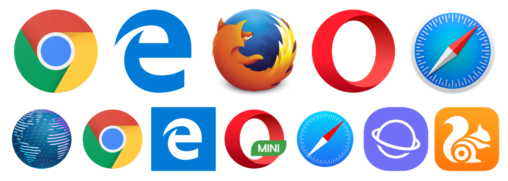

Giảng viên: Đỗ Nguyên Kha
Học kỳ 1/2017-2018 @ FIT-HCMUS
Web là cách gọi ngắn gọn của World Wide Web hay WWW - mạng lưới toàn cầu là một không gian thông tin toàn cầu mà mọi người có thể truy cập (đọc và viết) qua các thiết bị kết nối với mạng Internet. [Wikipedia]
Khái niệm Internet và Web thường được dùng nhầm lẫn với nhau. Tuy nhiên Web chỉ là một phần của Internet, ngoài ra còn có rất nhiều thành phần khác của Internet như Email (thư điện tử), VoIP (Voice-over-Internet Protocol - Giao thức thoại thông qua Internet), FTP (File Transfer Protocol - Giao thức truyền tải tập tin), Streaming media (Truyền tải âm thanh, hình ảnh)...
HTTP là viết tắt của Hypertext Transfer Protocol là giao thức dùng để truyền tải thông tin trên Web.
HTTPS là giao thức HTTP kết hợp với TLS hoặc SSL mã hóa dữ liệu trên đường truyền Internet
HTML là viết tắt của Hypertext Markup Language là ngôn ngữ đánh dấu để tạo nên các trang Web. HTML có dạng thẻ dùng để cấu trúc nội dung của trang Web.
In đậm
sẽ hiển thị
In đậm
- Mục 1
- Mục 2
- Mục 3
sẽ hiển thị
Cột 1
Cột 2
Cột 4
Cột 4
Dòng 1
A
B
C
Dòng 2
A
B
C
Dòng 3
A
B
C
sẽ hiển thị
<
| Cột 1 | Cột 2 | Cột 4 | Cột 4 |
|---|---|---|---|
| Dòng 1 | A | B | C |
| Dòng 2 | A | B | C |
| Dòng 3 | A | B | C |
Để hiển thị được HTML người dùng cần sử dụng trình duyệt Web. Các trình duyệt Web phổ biến: Chrome, Firefox, Safari, Edge/Internet Expoler, Opera...  Hình ảnh từ http://mediatemple.net/blog/tips/browser-statistics-matter/
Uniform Resource Locator thường gọi là địa chỉ Web dùng để xác định một tài nguyên Web (có thể gọi là tập tin trên Web) có dạng:
scheme:[//[user[:password]@]host[:port]][/path][?query][#fragment]
https://www.google.com/flights/
Các trang Web liên kết với nhau bởi liên kết Web gọi là Siêu liên kết (Hyperlink)
Google Flights
Cascading Style Sheets định dạng nội dung hiển thị trên Web. Ví dụ: In đậm, màu chữ, font chữ, cỡ chữ, khung viền, màu nền...
#mark {
/* Màu đỏ */
color: #ff0000;
font-weight: bold;
font-family: 'Arial';
}
Đánh dấu phần này
Đánh dấu phần này
CSS có thể đặt trong thẻ style
... hay ngay trong tag HTML
Đánh dấu chỗ này
JavaScript là ngôn ngữ lập trình kịch bản dùng để xây dựng các chức năng tương tác giữa người dùng và Web. Ví dụ: Click vào Button hiện thông báo, tải dữ liệu, thay đổi nội dung trang Web...
Tương tự CSS, JavaScript có thể nhúng vào trong trang Web dưới trong tag HTML
<script>alert('Hello world!');</script>
<script src="js/app.js"></script>
Khác với Web tĩnh chỉ là nội dung HTML được lưu trữ sẵn trên máy chủ. Web động (Dynamic Web page) phát sinh nội dung HTML khi người dùng truy cập vào máy chủ, do đó có thể xử lý các thao tác như lưu trữ dữ liệu, hiển thị dữ liệu từ cơ sở dữ liệu. Hầu hết các trang Web bạn vẫn sử dụng thường ngày đều là Web động.
Web động thường được xây dựng bởi các ngôn ngữ lập trình phổ biến cũng các Web framework phổ biến:
"PHP: Hypertext Preprocessor" là từ viết tắt dạng đệ quy. Trước đây PHP là viết tắt của "Personal Home Page". Là một ngôn ngữ lập trình dạng kịch bản dùng để phát triển Web (động). PHP có cú pháp tương tự C/C++/Java.
<?php
echo 'Hello World
';
?>
Máy chủ Web đơn giản chứa những tập tin HTML (Web tĩnh) hoặc thực hiện các thao tác thực thi các kịch bản/mã nguồn để phát sinh HTML (Web động). Các máy chủ Web phổ biến: IIS, Apache, nginx, Tomcat...
In thông tin phiên bản và các phần mở rộng của PHP được cài đặt trên máy chủ
<?php
phpinfo();
?>